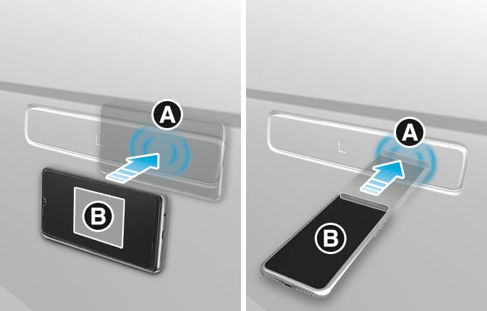

디지털 키 사용하기

2C_OutsideDoorHandleTouchBySmartPhone
- 도어 핸들 인증 패드
- 스마트폰 NFC 안테나(스마트폰마다 위치 다름)
스마트폰 디지털 키와 디지털 카드 키
스마트폰 또는 카드 키를 이용해 디지털 키를 등록하면 스마트 키를 휴대하지 않고도 스마트폰이나 카드 키로 도어 또는 테일게이트를 잠그거나 열고 차량의 시동을 걸 수 있습니다.
-
스마트폰 디지털 키는 블루링크 서비스에 가입한 후에만 사용할 수 있습니다.
-
디지털 키를 등록하는 방법은 '스마트폰 디지털 키 등록하기(블루링크 서비스 필요)'와 '디지털 카드 키 등록하기'를 참고하십시오.
도난 사고를 방지하려면 차량을 떠날 때 반드시 디지털 키를 휴대하십시오.